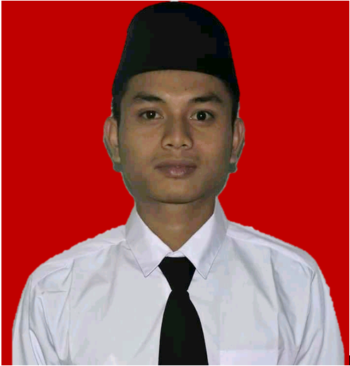

| Nama | Anton |  |
| Jenis Kelamin | Laki-Laki | |
| Tempat dan Tanggal Lahir | Lebak, 09 Oktober 1997 | |
| Berat / Tinggi Badan | 55 Kg / 170 Cm | |
| Alamat | Jalan Raya Cileles Km. 22 Desa Harjawana Kecamatan Bojongmanik Kabupaten Lebak Banten Provinsi Banten Kode POS 42363 | |
| No. Handphone | 0852-8050-8461 | |
| Alamat Email | manganton97@gmail.com |
| Tahun | Tempat Pendidikan |
| 2019-Sekarang | STT-Terpadu Nurul Fikir |
| 2016-2017 | Pesantren Teknologi Informasi dan Komunikasi (PeTIK) |
| 2013-2016 | SMAN 1 Leuwidamar |
| 2009-2013 | SMPN 3 Leuwidamar |
| 2003-2009 | SDN 1 Harjawana |